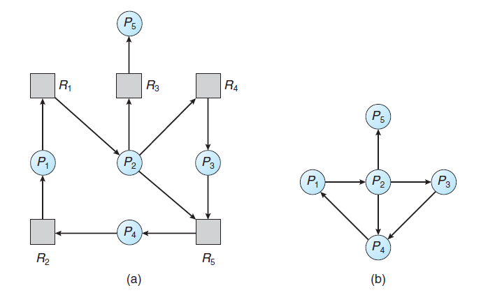

*Deadlock Detection Thus far we have examined several ways to prevent or avoid deadlock, but all of those solutions have come with significant drawbacks or limitations. Avoidance analyses are also conservative; they will prevent a request from taking place if there is even a small chance it could lead to a deadlock. If we cannot stop deadlock from happening or cannot live with the performance reduction that avoidance mandates, then perhaps the next best thing is to let all resource requests proceed and then determine later if a deadlock exists, and if so, do something about it.
The truth is that the operating system is in the best position to detect if there is a deadlock, but commercial operating systems don’t do that. We can do it ourselves in our program using some of the following techniques but we almost certainly won’t have the full picture. This is because we cannot see what’s going on inside other processes or inside the kernel. But we will do our best under the circumstances, if we need to.
The basic strategy for deadlock detection is like the deadlock avoidance strategy in that it relies on a model of the resource allocation and requests. If resources have only a single instance, we may reduce the graph to a simplified version called the wait-for graph. This removes the resource boxes from the diagram and indicates that a process P_{i} is waiting for process P_{j} rather than for a resource R_{k} that happens to be held by P_{j}. An edge P_{i} \rightarrow P_{j} exists in the wait-for graph if and only if the resource allocation graph has a request P_{i} \rightarrow R_{k} and an assignment edge R_{k} \rightarrow P_{j} . Consider the example below:

(a) A resource allocation graph and (b) its corresponding wait-for graph .
Given the wait-for graph, it is trivial for humans to look at this and determine if there is a cycle, but for the computer it takes slightly more work. We must execute an algorithm to determine if there is a cycle. A cycle exists in the wait for graph if and only if a deadlock exists in the system. Such cycle detection algorithms tend to have runtime characteristics of \Theta(n^{2}) where n is the number of nodes in the graph. Though not a formal proof and probably not acceptable to write on a data structures and algorithms examination, the premise of the algorithm is: for each node n in the graph, examine each possible path from that node. If a node is reached from which no further path is available, examine the next path. If node n is reached on the current path, a cycle is detected and the algorithm terminates.
We will use the general deadlock detection algorithm from that allows for multiple resources of each type. In this algorithm, there are n processes numbered P_{1} through P_{n} and m resources. Resources are represented by two vectors: E, the existing resource vector – the total number of instances of each resource; and A, the available resource vector – how many instances of each resource are currently available (not assigned to a process). If resource i has two instances total and one is currently assigned to a process, E_{i} is 2 and A_{i} is 1.
We need two matrices to represent the current situation of the system. The first is C, the current allocation; it contains data about what resources are currently assigned to each process. Thus, row i of C shows how many of each resource P_{i} has. The second matrix is R, the request matrix. Row i of this matrix shows how many of each resource P_{i} wants. Thus, C_{ij} shows the number of instances of resource j that P_{i} has and R_{ij} shows the number of instances of resource j that P_{i} wants. Or, to show what those look like:
2
Resources in Existence
[E_{1}, E_{2}, ..., E_{m}]
Current Allocations \left[ {\begin{array}{cccc} C_{11} & C_{12} & ... & C_{1m} \\ C_{21} & C_{22} & ... & C_{2m} \\ \vdots & \vdots & & \vdots \\ C_{n1} & C_{n2} & ... & C_{nm} \end{array} } \right]
Resources Available
[A_{1}, A_{2}, ..., A_{m}]
Requests \left[ {\begin{array}{cccc} R_{11} & R_{12} & ... & R_{1m} \\ R_{21} & R_{22} & ... & R_{2m} \\ \vdots & \vdots & & \vdots \\ R_{n1} & R_{n2} & ... & R_{nm} \end{array} } \right]
Note that at all times a resource is considered either allocated or available. This means this mathematical relationship always holds:
\sum\limits_{i=1}^n C_{ij} + A_{j} = E_{j}.
There is one more bit of setup before we are ready to run the algorithm. The key idea is comparison of vectors, so let us define for notational convenience, the idea of “less than” for two vectors. We will say that for two vectors A and B of length m, A \leq B means that A_{i} \leq B_{i} for all i from 1 to m.
At last, the algorithm. The starting condition is that all processes are unmarked and the vectors and matrices described above are populated. The algorithm will go through all processes and determine if they can complete, under worst-case conditions (keeping all resources until termination), and if they can, marks them. At the end, any processes that are not marked are deadlocked.
Search for an unmarked process whose requests can all be satisfied with the available resources in A. Mathematically: find a process P_{i} such that row R_{i} \leq A.
If a process is found, add the allocated resources of that process to the available vector and mark the process. Mathematically: A = A + C_{i}. Go back to step 1.
If no process was found in the search of step 1, the algorithm terminates.
This approach is similar to the banker’s algorithm. Step one looks for a process that can run to completion, and we are certain it will be able to do so because the currently available resources equal or exceed its needs. That process can finish, and when it does so, its currently-held resources are released and available for another process to acquire. Step two reflects this by adding the resources it holds to the available set. Then another process is selected. At the end, either all processes can finish and there is no deadlock, or there is a set of processes (at least two) that are deadlocked.
This algorithm has a runtime performance characteristic of \Theta(m \times n^{2}).
Let’s now use this algorithm on an example also from . Let us assume we have 4 types of resources and 3 processes. The names and types of the resources do not matter - they can be anything - all that matters are the numbers. Each process has some resources currently allocated to it, and each process has some requests outstanding. Thus, the initial state of the system is:
2
E = [4, 2, 3, 1] C = \left[ {\begin{array}{cccc} 0 & 0 & 1 & 0 \\ 2 & 0 & 0 & 1 \\ 0 & 1 & 2 & 0 \\ \end{array} } \right]
A = [2, 1, 0, 0] R = \left[ {\begin{array}{cccc} 2 & 0 & 0 & 1 \\ 1 & 0 & 1 & 0 \\ 2 & 1 & 0 & 0 \end{array} } \right]
Now, carry out the algorithm. The first process cannot proceed because its request R_{14} cannot be met; there are no instances of resource 4 available. Process 2 cannot proceed either, because it needs resource 3 and there are none of those available either. Process 3 can run and will eventually return its resources, changing the available vector to A = [2, 2, 2, 0]. Mark process 3.
Process 1 still cannot run because its need for resource 4 still cannot be met. Process 2, however, can, and it will do so, returning all its resources. The available vector is changed to A = [4, 2, 2, 1]. Mark process 2.
Process 1 can now run. Return its resources: A = [4, 2, 3, 1]. Mark process 1.
There are no remaining unmarked processes in the system, and therefore no deadlock. As a sanity check, compare vector E and the final values for A – they should be the same if there is no deadlock.
The runtime characteristic of the simple deadlock detection algorithm was identified as \Theta(n^{2}), and the runtime characteristic of the general algorithm was shown as \Theta(m \times n^{2}) where n is the number of processes and m is the number of resources in the system. This means that the deadlock detection routine is expensive to execute.
This prompts a question: how often should the deadlock detection algorithm be run? One strategy is to run it every time a resource is requested. Running the algorithm might be rather expensive, so perhaps this is too often. An obvious optimization: it should only run every time a resource request cannot be granted (that is, a process gets blocked). Another idea: run it periodically instead.
When to run the deadlock detection algorithm depends on how often we expect deadlock to occur, and how severe a problem it is when deadlock occurs. If deadlock happens a lot, checking for deadlock often will make sense. If the consequences of a deadlock are severe, it makes sense to check frequently to identify the problem as soon as possible.
Several sources including suggest running the deadlock detection algorithm when CPU utilization is low. This is not only because it would be a bad idea to run an algorithm that is time consuming and computationally expensive while the system is busy. When a deadlock is present in the system, many processes are stuck and cannot proceed, so a drop in CPU usage may be an indication that many processes are deadlocked.
Once a deadlock has been detected, a system can recover from that deadlock by “breaking” the deadlock. These are called recovery strategies and they are ways the system may automatically deal with the problem. It is possible to have a manual form of deadlock recovery, where an operator is notified and that person is responsible for sorting out the problem, but the manual method needs no further discussion.
There are several strategies that we could apply, which we will refer to in humorous terms. All are valid solutions of various complexity. Unfortunately, none of the solutions are particularly pleasant. They can result in data loss, delays in completion of programs, or some other problems. Ideally we would like to break the deadlock with as little disruption as possible, so the strategies that rely on selection of one or more victims should choose carefully. These strategies are not mutually exclusive; an operating system may implement some or all of them.
The strategy of “robbery” is just a humorous way of saying preemption. This is virtually identical to the discussion of knocking down the pillar of deadlock for deadlock prevention; the only difference is that recovery is run only when deadlock is detected. Suppose a process P_{1} has a resource R_{1} and needs R_{2}, while a process P_{2} has R_{2} and needs R_{1}. The operating system may block process P_{2} and take away R_{2} from P_{2} and allow P_{1} to have it. After that resource becomes available again, it is returned to P_{2}. In the general case, the operating system will take resources from (“rob”) some process(es) and give those resources to other processes until the deadlock cycle is broken. To do so, the operating system needs to choose a victim to rob; a subject we will examine shortly.
The resource should be an appropriate type to be preempted: it must be possible to save and restore the state. Preemption of a printer is not realistic, nor is memory. However, other resources, like a processor or access to the network, may be. If the state of the resource cannot be saved and restored, then preemption is not a good strategy.
If the operating system detects a deadlock, it may choose to terminate (kill) all the processes involved in the deadlock. This solution is surprisingly common. It is one way to be certain that the deadlock cycle is broken. The resources that these processes were holding will become available. There is no need to determine a victim: kill ’em all and let root sort them out.
This solution, while easy to implement, may not solve the problem, however, as the circumstances that caused the deadlock may occur again if all the processes are restarted. If the deadlock were an unlikely situation caused by “unlucky” timing then it will probably not recur, or at least, will not recur for some time.
If processes P_{1} and P_{2} are deadlocked, however, is it really necessary to kill both of them? If we killed only one, the other could proceed...
Perhaps instead of killing all processes involved in a deadlock, the operating system chooses to kill processes selectively. Like preemption, selecting which process is the victim is important. When the victim is killed, its resources are added to the available set and this will hopefully allow other processes to proceed. At this point, the deadlock detection algorithm must run again to determine if a deadlock still exists; if not the problem is dealt with, but if so, this strategy needs to be repeated (select a new victim, kill it, free up its resources, and determine if deadlock is still present) again and again until the logjam is broken.
Time travel is just a clever way of saying rollback: returning the state of a process to a saved state from an earlier time. To do so, of course, there must be a saved state that was created in advance of a problem (otherwise there is no state to roll back to...). The saved state is called a checkpoint and the act of creating and saving a checkpoint is called checkpointing1. Checkpoints may be created periodically or before beginning a particular operation that requires a lot of resources.
A checkpoint contains the memory image, including the call stack, and resource state of a process. It is written to disk and will usually persist as long as the process continues to execute.
You might already be somewhat familiar with the concept of rollbacks if you have used version control software like Subversion (svn) or Git (git). A previous state of the source code is saved and if a developer commits a change that is detrimental to the software, that change can easily be undone by reverting the state of the source files to an earlier version. Rollbacks are also common in databases; if an attempted modification of a database record fails for some reason, such as data being too long for a field, then the state of the database is restored to what it was before the attempted change.
Unfortunately, rollback does not always succeed. Sometimes moving the process back to an earlier state just moves it a few steps back on the same road that leads to the deadlock. Or a different ordering of events and resource requests may avoid the deadlock entirely. Rollback may be attempted a few times before giving up and trying another strategy.
Armageddon - the end of the world. If a deadlock has occurred, sometimes the best thing to do is reboot the system. This has a side effect of killing all processes, whether they are stuck or not, but is sometimes the best way to make sure that the system is in a valid state. NASA’s Spirit rover, one of the missions to explore the red planet, relies on this strategy if it detects a deadlock. Like killing all affected processes, it is easy to implement, but is most disruptive.
If we have to choose a victim process for one of the strategies, e.g., termination, then we need a strategy for which process to choose. We could choose randomly: kill a process and hope that that was enough. Sometimes this will work, because it breaks the deadlock and the other processes can all proceed. In general, however, making an informed decision is better.
Note that it is, strictly speaking, not necessary to choose one of the processes involved in the deadlock. For example, if P_{1} and P_{2} are deadlocked, a process P_{3} may have an instance of a resource that P_{1} needs, and killing P_{3} will allow both P_{1} and P_{2} to proceed.
We can think of this as kind of an optimization problem. Define a cost function for choosing each process, evaluate the cost function, and then choose the lowest cost. Some factors to consider in selection of processes :
The priority of the process.
How long the process has been executing.
How long is remaining in execution, if known.
What resources the process has (number and type).
Future resource requests, if known.
Whether the process is user-interactive or in the background.
How many times, if any, the process has been selected as a victim.
These sorts of selection routines tend to favour older processes rather than younger ones. This is not because older processes vote in higher numbers, but because it tends to be more expensive to restart an older process. A process that has been running for a long time, if it is restarted, has to do a lot more work to get to the point where it was terminated than a younger process. Another reason: if the oldest process were constantly the one selected, that process itself might never get to run to completion (starvation) because it is constantly killed before it finishes. A third reason is somewhat more subtle: if the killing process is very aggressive then perhaps no tasks run to completion because each process, shortly after becoming the oldest, is claimed by the deadlock recovery process. Therefore, young processes tend to be the ones selected.
The final element in the list, keeping track of how many times a process has been victimized, is also there to prevent starvation. The selection process very likely produces the same or similar results each time it is run, so it may happen that the same process is selected over and over again. It may be advisable to take the number of rollbacks or terminations into account so that no process in particular is starved.
The deadlock detection algorithm we have chosen tends to be conservative in that it will err on the side of saying that there is a deadlock. This is because the worst case is assumed: that processes take resources and keep them until the end of their execution. In practice, however, processes will release resources (or at least they should!) so we might detect a deadlock when there is none. We may also, then, kill an innocent process in a system that is not actually deadlocked. Oops!
It turns out that our deadlock detection algorithms do not have to be perfect if we have chosen an appropriate recovery strategy. If killing the process and restarting it does not have unexpected side effects (like asking the user the same question a second time), then being selected does not have an impact on the correctness of the program; just on how long it takes to execute. Suppose the process is a compiler. It reads the source files, processes that input, and produces the binary output file. If partway through, this task is terminated and has to start again, it takes slightly longer for the compile to finish, but there is no impact on the correctness of the binary.
Once again, verbing weirds language.↩